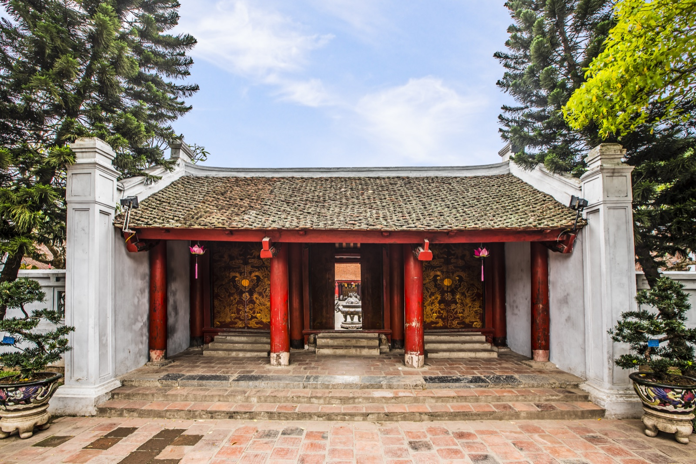
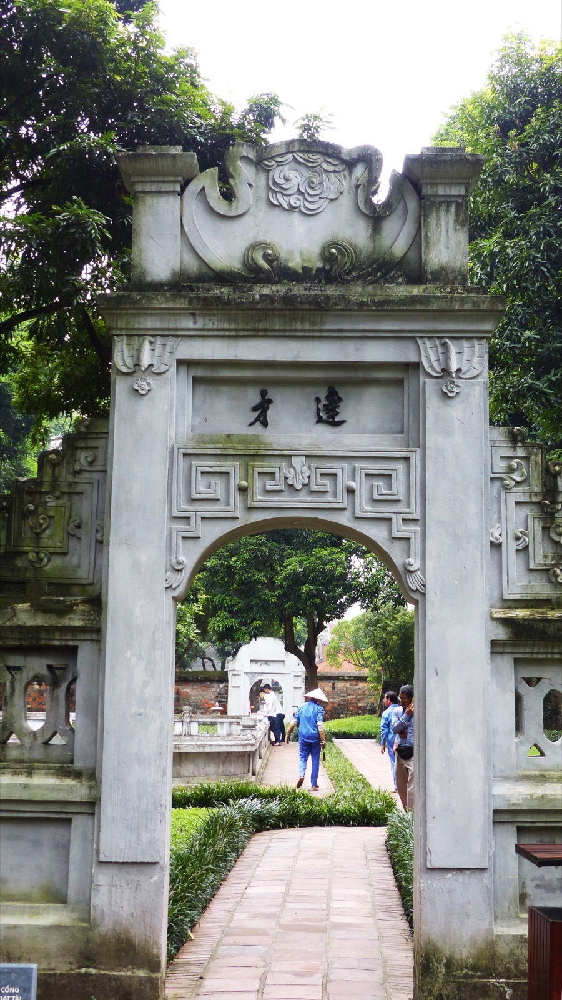

Khu di tích Văn Miếu – Quốc Tử Giám trải dài theo trục Bắc – Nam, gồm 5 lớp sân với nhiều công trình kiến trúc tiêu biểu.
Các công trình chính
- Hồ Văn — Hồ nước lớn phía trước, có gò Kim Châu ở giữa với đình Phán Thuỷ.
- Cổng Văn Miếu (Văn Miếu Môn) — Cổng tam quan 3 cửa, xây thời Lê, trùng tu thời Nguyễn.
- Đại Trung Môn — Cổng thứ hai với 3 gian mái cong.
- Khuê Văn Các — Gác vuông 8 mái, xây năm 1805, biểu tượng của Hà Nội. Tầng trên có 4 cửa tròn tượng trưng vầng sáng văn học.
- Vườn bia Tiến sĩ — Hai dãy nhà bia với 82 tấm bia đá, dựng từ 1484–1780.
- Đại Thành Môn — Cổng vào khu thờ chính, 3 cửa.
- Đại Bái Đường — Nhà thờ chính, nơi thờ Khổng Tử và Tứ Phối.
- Thượng Điện (Đại Thành Điện) — Điện thờ phía trong.
- Khu Thái Học — Xây dựng lại năm 2000 trên nền trường Quốc Tử Giám xưa, gồm Tiền Đường, Hậu Đường và hai nhà Đông Vũ – Tây Vũ.
- 82 Bia Tiến sĩ — Di sản tư liệu UNESCO; 82 bia đá rùa khắc tên 1.304 Tiến sĩ.


